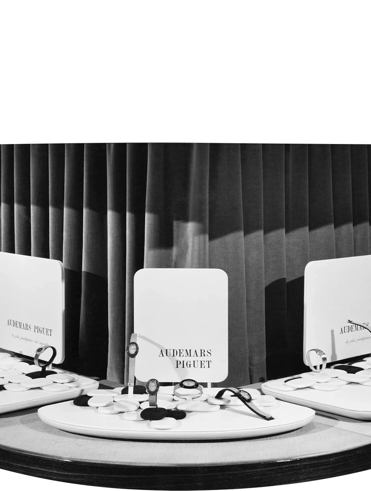
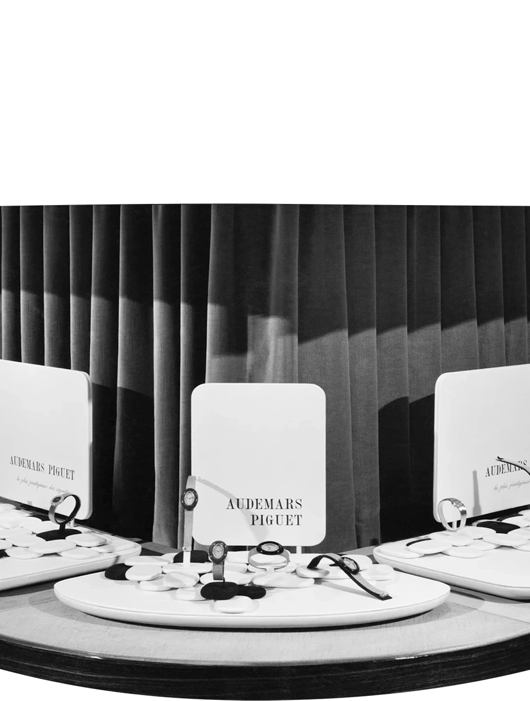

3,025
5,402
6,050
7,800


The sporty and stylish spirit of Audemars Piguet’s Royal Oak collection has enthralled watch aficionados around the world for half a century. We take a look back at its legacy, from the iconic design that was sketched in just one night to the obstacles overcome by designer Gérald Genta and various artisans to turn this vision into reality.
Setember 6, 2022
 

The Royal Oak’s journey towards its Basel Fair launch began two years prior with a phone call from AP’s then-managing director, Georges Golay, to Genta on April 10, 1970.

The designer had misunderstood the brief as asking for a watch with “water resistance that had never been done before”, which led him to draw inspiration from diving helmets. Genta explained his thinking process during an interview a few months before his death in 2011: “I was very impressed when I saw the eight bolts and the rubber seal designed to protect a person’s life under water. I was tempted to fit a highly prestigious movement inside a case entirely recalling the diver’s helmet.”
Real involvement means investing in a long-term structure for continuous research, monitoring the sustainable use of resources, and ensuring local people benefit from the whole process.
Gérald Genta
When creating the design sketch for the Royal Oak, Genta was inspired by his memory of seeing a diver outfitted with a heavy helmet, which had multiple bolts to secure its water-resistant protection.
The eight bolts that he saw surrounding the face of the diving helmets were reinterpreted into the Royal Oak’s octagonal bezel featuring eight visible screws. These signature hexagonal screws seem to defy functionality, as they cannot be turned. According to Genta, they actually are secured in such a way so that they will not turn when locked from beneath – together with the lip-type seal, this contributes to the patented water resistance of the watch.
The eight screws were key to designing the iconic, immediately recognisable shape of the Royal Oak. “The octagonal shape was obviously due to the fitting of the eight screws, because I had to find the space in the bezel to place them all,” Genta said.
As for the dial, serendipitous circumstances again influenced the design. Genta collaborated with Swiss dial maker Stern Frères, which had recently obtained “guilloché copying” machines that were usually used to engrave silver and gold items. These machines were given to Stern Frères by a neighbouring workshop as they were falling into disuse.
Genta was interested in making use of the machines, and so chose one of its pattern templates for the Royal Oak’s dial. Now known as “Petite Tapisserie”, the pattern is composed of hundreds of small, pyramidal squares punctuated by tens of thousands of tiny, diamond-shaped holes, which together create subtle and unique light effects. He also had only one colour in mind for his design – marine blue. The specific hue selected for the dial was called “Bleu Nuit 1 + N50”, a midnight blue with a touch of black.
These three Royal Oak dials produced between 1970 and 1980 all feature the “Petite Tapisserie” guilloché pattern, but each varies slightly in colour due to the intricate manufacturing techniques and different light exposures involved in their creation.
However, because the first Royal Oak dials were crafted by hand, each one varied slightly in both the guilloché work and the colour. The electroplating technique required to apply the colour on the complex pattern made it impossible to guarantee a consistent hue on every dial, even when the most meticulous care was taken during the process. That meant no two dials were the same, so each Royal Oak watch was truly one of a kind.
A total of 6,050 timepieces were sold between 1972 and 2002, of which 4,288 were made of steel. The number significantly surpassed the planned limit of 1,000.
[An advertisement from 1972 reads: “Chaque exemplaire des séries limitées de Royal Oak est numéroté”, which means “Each watch in the Royal Oak limited series is numbered”. The French term séries limitées is plural, which made multiple series such as the subsequent series A, B, C and D possible without abandoning the idea of limited watches in the market.]

Genta’s involvement in the creation of the Royal Oak went beyond the design stage, as he asked to oversee the watch’s production as well:
This is so special that I would like to monitor the making of the prototype. I had a very precise idea in my head, and I knew what I wanted to do
Gérald Genta
But as he continued on the watchmaking journey, he would encounter several obstacles along the path.
The various difficulties that Genta faced included having to persuade watch case manufacturer Favre & Perret – which specialised in producing gold cases – to construct a steel case with the same meticulous care. The company’s response to his request was: “Sir, it won’t work.” But Genta remained confident about his design and persevered, eventually getting Favre & Perret on board.
The result of this effort was a never-before-seen stainless steel case, satin-finished by hand with alternating use of satin-brushing and polished chamfers that give the look of precious metal. It was also notable for its unprecedented water resistance as well as its sleek and slender construction, made possible by the choice of Calibre 2121, which at the time was the world’s thinnest mechanical self-winding movement with date.
When the Royal Oak was first created, it was powered by Calibre 2121, which at the time was the thinnest mechanical self-winding movement with date. It was derived from Calibre 2120, which AP had helped develop in the late 1960s.
But Genta still had many more hurdles ahead, and looming large among them was his design for the Royal Oak’s integrated bracelet. It was the most complex to ever be made from steel, comprising 154 components, among which 34 were of different sizes.

To make the bracelet a reality, AP turned to a specialist: Geneva-based company Gay Frères, which also produced bracelets for Rolex and Patek Philippe. But despite their experience and equipment, the Gay Frères artisans were never able to meet AP’s exacting requirements for the finishing of the bracelet.
An AP watchmaker assembles a Calibre 2121 movement while wearing one of the first Royal Oak watches ever created, sometime around 1972.
So as was done with the steel cases produced by Favre & Perret, each bracelet had to be hand-finished by AP’s watchmakers in Le Brassus, Switzerland, during the casing-up process. Even after the Royal Oak’s 1972 launch, improvements continued to be made to ensure the quality and ergonomics of the watch, particularly to perfect the tapering of the links attached to the case.
As of 2022, the Royal Oak comprises more than 550 different models, most of which have been produced in multiple variants.
That seems like an impressive number, but it’s actually even higher – nearly 550 models! As of 2022, the Royal Oak comprises more than 550 different models, most of which have been produced in multiple variants.
The Royal Oak was the first watch to be given a name at AP. During its development stage, the watch had the working name of Safari. But by September 1971, the choice of name was still under discussion, as evidenced by an AP meeting report that listed other suggestions including Grand Prix, Surfrider and Kilimanjaro.

The final decision on the name Royal Oak was first documented on December 2, 1971. Those who witnessed the process agreed that AP’s Italian agent, Carlo de Marchi, came up with the name, which referred to the Royal Oak warships of the British Royal Navy – many of which were armoured with steel.
A 1973 brochure for the Royal Oak explained its design and structure, as well as the origins of its name. The cover featured a historic illustration of the watch’s namesake, a Royal Oak warship from the British Royal Navy Fleet.
The name was also a nod to the story of King Charles II of England, who owed his life to an oak tree that had sheltered him from Oliver Cromwell’s troops during the Battle of Worcester in 1651 and which he subsequently ennobled.
With its innovative stainless steel construction and groundbreaking, sporty-chic design, the Royal Oak ushered in the next era in horology and led the way towards an entirely new category of high-end sports watches. It became a trailblazing timepiece that helped AP weather the quartz crisis so that it could carry on its time-honoured tradition of high-end watchmaking.

The latest Royal Oak “Jumbo” model pays tribute to the original model from 1972 with a case made in hand-finished steel and the signature “Petite Tapisserie” dial in midnight blue. Inside is the new Calibre 7121 self-winding movement, which is fitted with a special “50 years” oscillating weight in rhodium-toned pink gold.
It is beautiful, elegant and sporty in appearance, whereas watches up until now were either very elegant or very sporty.
Gérald Genta
Be sure not to miss the 50 Years of Royal Oak Exhibition, an exhibition that will be presented at M+ Pavilion, West Kowloon District in September to showcase the evolution of generations of the iconic Royal Oak over the past 50 years.
Want to learn more about the Royal Oak? Visit the exhibition at M+ Pavilion, West Kowloon District, on view from September 18 to 25.